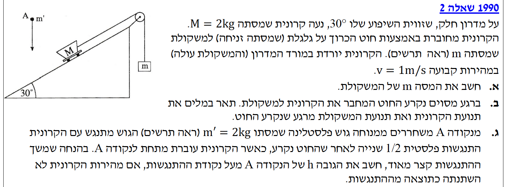
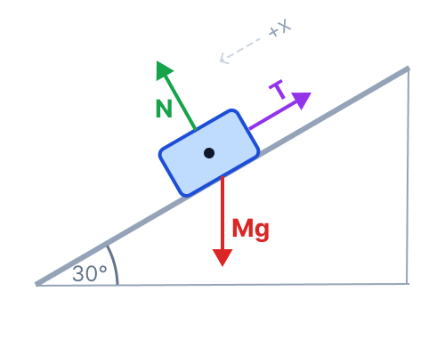
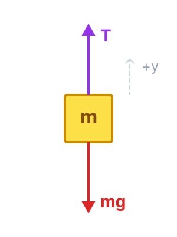
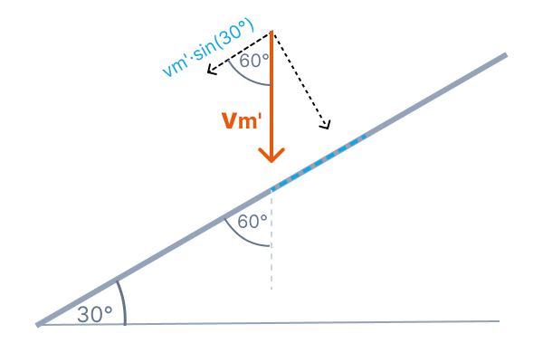

פתרון מודרך הכולל ניתוח כוחות במערכת, חוקי ניוטון, ושימור תנע בדו-מימד.
בשאלה זו אנו מנתחים מערכת של שני גופים המקושרים בחוט דרך גלגלת אידיאלית. המערכת מתחילה את תנועתה במצב של שיווי משקל דינמי, כלומר בתנועה במהירות קבועה (סעיף א'). בשלב השני, החוט נקרע והגופים עוברים לנוע תחת השפעת כוח הכובד בלבד, כל אחד בצירו (סעיף ב'). בשלב האחרון והמאתגר (סעיף ג'), מתרחשת התנגשות פלסטית בין הקרונית לגוש הנופל אנכית. בסעיף זה ניעזר בפירוק כוחות ווקטורים ובעקרון שימור התנע בציר בו לא פועלים כוחות מתקפיים חיצוניים.
לכל אורך הפתרון, נקפיד על הפרדת הגופים ותרשימי כוחות חופשיים עבור כל גוף בנפרד.

נשרטט תרשים כוחות נפרד לכל גוף. מאחר ונתון כי מהירות המערכת קבועה, אנו מסיקים לפי החוק הראשון של ניוטון כי התאוצה של שני הגופים היא אפס (\( a = 0 \)), ולכן שקול הכוחות על כל גוף הוא אפס.


עבור הקרונית \( M \), נבחר ציר \( x \) חיובי בכיוון מורד המדרון (כיוון התנועה). הכוחות הפועלים בציר זה הם רכיב המשיכה של כדור הארץ \( Mg \sin(30^\circ) \) במורד המדרון, ומתיחות החוט \( T \) במעלה המדרון.
עבור המשקולת \( m \), נבחר ציר \( y \) חיובי כלפי מעלה (כיוון התנועה שלה, שכן הקרונית יורדת). הכוחות הפועלים עליה הם המתיחות \( T \) מעלה, וכוח הכובד \( mg \) מטה.
נשווה בין שני הביטויים שקיבלנו למתיחות החוט (החוט אידיאלי ולכן המתיחות שווה לאורכו):
ניתן לצמצם את תאוצת הכובד \( g \) משני האגפים. נציב את נתוני המסה של הקרונית ואת ערך הסינוס:
ברגע קריעת החוט, כוח המתיחות \( T \) מתאפס בבת אחת עבור שני הגופים. על מנת לתאר את התנועה, נבחן אילו כוחות נשארו לפעול על כל גוף ואת תאוצתו החדשה.
הכוח היחיד הפועל עליה כעת הוא כוח המשיכה של כדור הארץ מטה. כיוון שהמשקולת נעה כלפי מעלה ברגע הקריעה, היא תמשיך לנוע מעלה תוך שגודל מהירותה קטן בתאוצה קבועה של \( a = -g = -10\text{ m/s}^2 \) (נפילה חופשית). היא תגיע לשיא גובה בו מהירותה תתאפס רגעית, ולאחר מכן תתחיל ליפול חזרה מטה כשגודל מהירותה גדל.
על הקרונית פועלים כעת רק הכוח הנורמלי (שמאזן את רכיב הכובד המאונך) ורכיב כוח הכובד במורד המדרון, \( Mg \sin(30^\circ) \). מכיוון שאין יותר מתיחות המושכת לאחור, יפעל עליה כוח שקול במורד המדרון. הקרונית, שכבר נעה במורד המדרון, תמשיך לנוע באותו הכיוון אך כעת בתאוצה קבועה. גודל התאוצה החדש יהיה \( a = \frac{Mg \sin(30^\circ)}{M} = g \sin(30^\circ) = 5\text{ m/s}^2 \). לכן, הקרונית תנוע במורד המדרון וגודל מהירותה יגדל בהתמדה.
נחשב את מהירות הקרונית ברגע ההתנגשות, כלומר \( t = 0.5\text{ s} \) לאחר שהחוט נקרע. מהירותה ההתחלתית במורד המדרון היא \( v_0 = 1\text{ m/s} \). כפי שראינו בסעיף ב', תאוצתה במורד המדרון (אותו נגדיר כציר החיובי) היא \( a = 5\text{ m/s}^2 \).
הקרונית נעה במהירות של \( 3.5\text{ m/s} \) במורד המדרון בדיוק לפני הפגיעה.
הגוש מתנגש בקרונית ונדבק אליה (התנגשות פלסטית, גוף אחד שמסתו כוללת \( M + m' \)). במהלך ההתנגשות, פועל על המערכת כוח נורמלי מתקפי גדול מאוד מהמשטח, אשר משנה את התנע של הגוש בציר המאונך למדרון. אולם, בציר המקביל למדרון אין כוחות מתקפיים חיצוניים (בהנחת מדרון חלק), ולכן רכיב התנע של המערכת המקביל למדרון נשמר.

כיוון שהגוש נופל אנכית, עלינו למצוא את רכיב מהירותו המקביל למדרון. הזווית בין הכיוון האנכי (כיוון הנפילה) למורד המדרון היא \( 90^\circ - 30^\circ = 60^\circ \). רכיב המהירות של הגוש המקביל למדרון לפני הפגיעה הוא \( v_{m'} \cos(60^\circ) = v_{m'} \sin(30^\circ) \).
נרשום את חוק שימור התנע בציר המדרון. ידוע לנו שמהירות הקרונית לא השתנתה, כלומר המהירות המשותפת לאחר ההתנגשות היא עדיין \( v_M \):
נפשט את המשוואה מתמטית בצורה אלגנטית על ידי פתיחת סוגריים באגף ימין:
נחסר \( M \cdot v_M \) משני האגפים. מכאן, המסה והתנע של הקרונית מצטמצמים כליל מהמשוואה!
נחלק במסת הגוש \( m' \), ונקבל שעל מנת שמהירות הקרונית לא תשתנה, על הגוש להביא עמו מראש רכיב מהירות (לאורך המדרון) השווה בדיוק למהירות הקרונית:
מסקנה: הגוש פגע בקרונית כשהוא נופל במהירות אנכית של \( 7\text{ m/s} \).
הגוש \( m' \) שוחרר ממנוחה (\( v_{0y} = 0 \)) ונפל נפילה חופשית בתאוצה של \( a = g = 10\text{ m/s}^2 \) עד שהגיע למהירות של \( v_{m'} = 7\text{ m/s} \). נשתמש במשוואת הקינמטיקה ללא זמן כדי למצוא את ההעתק האנכי \( h \):